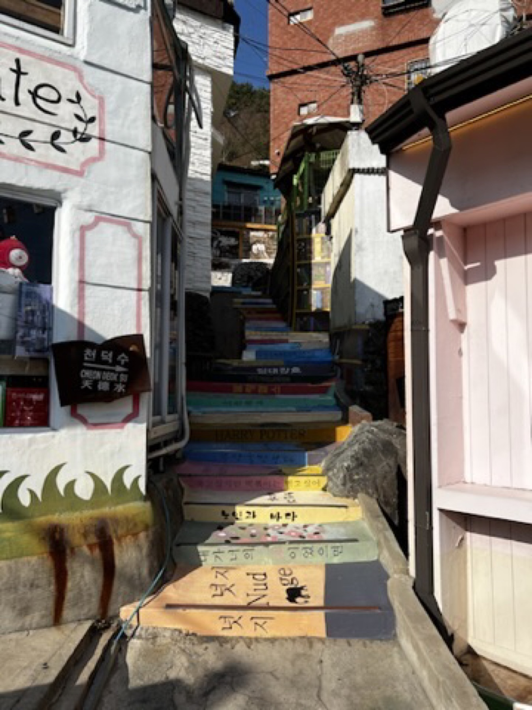
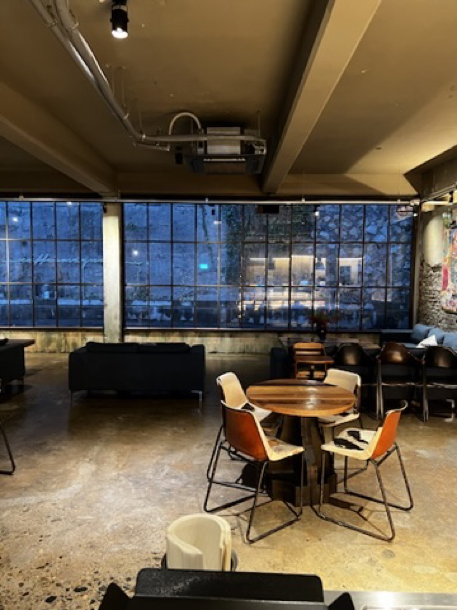
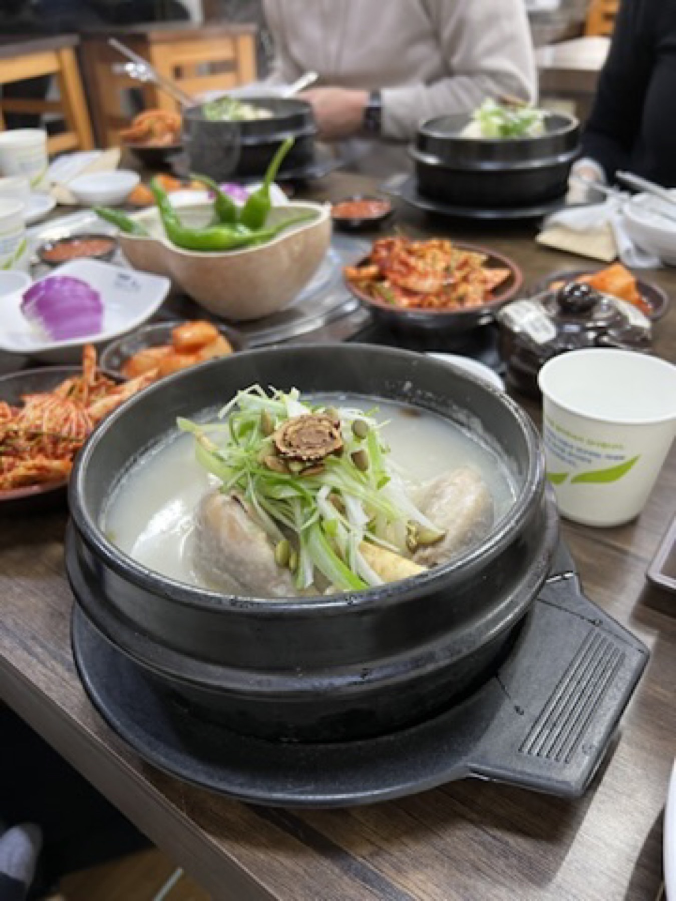

Best for
Readers who want a Korea route with coastal sightseeing and warm meals built into the day.
South Korea / Busan / Dec 2022
Busan felt easier and more open than Seoul: coastal views, hillside color, sea-facing movement, warm bowls, and cafe pauses that made the cold-weather route feel softer.
Use this page as the Busan reference for the Korea route: less formal than Seoul, more scenic between stops, and strong enough visually even without using person-heavy photos.

Busan is the part of the Korea trip that relaxed the whole route.
The city had enough movement to keep the days full, but the coast softened everything. The best memories are simple: sea views, Gamcheon color, a generous table, warm soup, and one cafe pause that made the chapter feel less rushed.
This public version uses mostly place-led images, with food photos kept inside the travel chapter until there is enough detail for proper standalone reviews.
Busan, in moments
A quick visual route through the safest public photos: hillside color, coastline, cafe pause, and warm food.
Coastal view
The simple water-and-hillside image that made Busan feel calm quickly.

Hillside walkStairs, pastel walls, and the more playful side of Busan's winter mood.
Sea route
Open water and hillside lines that gave the city more breathing room.

Slow stopA quieter interior stop that kept the coastal day from feeling rushed.

Food notePork soup and seafood made the cold-weather chapter feel properly grounded.
Busan worked because it kept giving the route room to breathe: sea outside, warm food inside, and enough color between both to make the middle chapter memorable.
Busan chapter feeling
Coastal First Impression
Busan felt different from Seoul almost immediately. The city still had plenty of movement, but the sea changed the rhythm. It made the route feel wider, less formal, and easier to enjoy without planning every minute too tightly.

Gamcheon and Hillside Color
The hillside streets gave Busan more personality. Narrow paths, colorful walls, and small changes in elevation made the city feel visually active without needing a huge landmark at every stop.
Coastal Rail / Sea Views
The coastal rail and sea-facing views are what make Busan useful as a middle chapter. They give the trip a visual reset after Seoul's denser streets and before returning north again.
Cafe Pause
The cafe side of Busan worked because it did not need to compete with the sightseeing. It was enough to pause indoors, reset the pace, and let the day slow down before the next warm meal.
Comfort Food Notes
The Busan food photos are strong enough to support the travel chapter now, but not yet enough for standalone reviews. The meals still matter here because they explain why Busan felt so comfortable in winter.
Best for
Readers who want a Korea route with coastal sightseeing and warm meals built into the day.
Still missing
Restaurant names, exact dishes, and fuller verdict notes before these become dedicated food posts.